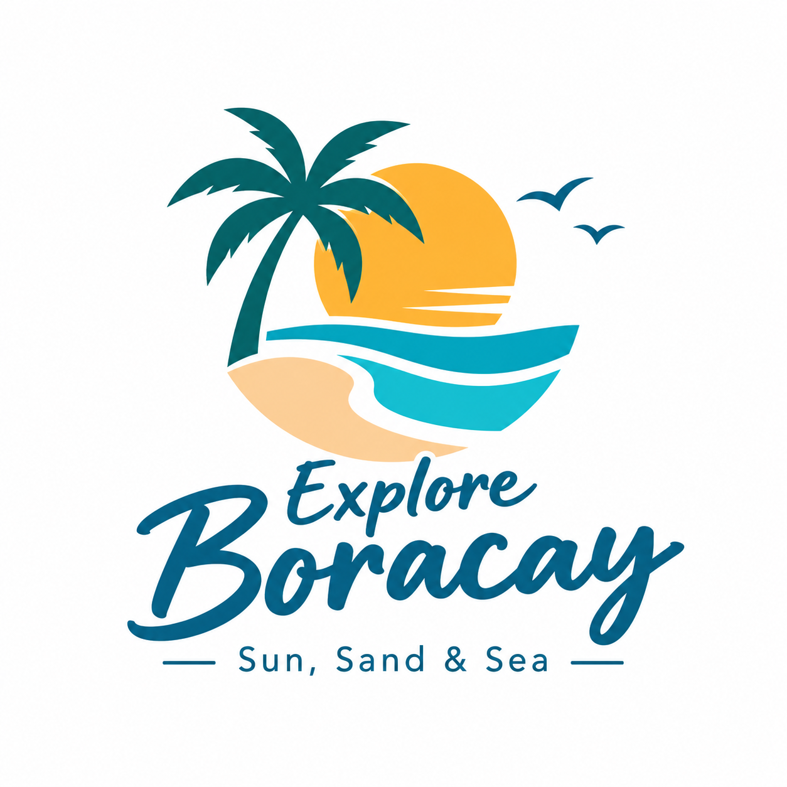

Hospitality
Welcoming every traveler with friendly, useful information.

Explore BoracaySUN, SAND & SEAWe help travelers discover Boracay with a little more confidence, curiosity and care for the coast.

Explore Boracay is a conceptual tourism information and tour-inquiry brand created for a tourism website project. It brings together island highlights, sample experiences and useful trip-planning information in one welcoming place.
Our goal is to encourage visitors to enjoy Boracay’s natural beauty while respecting local communities, coastal environments and responsible travel practices.
To make discovering Boracay simple, inspiring and mindful through clear travel information and approachable experience suggestions.
To be a trusted starting point for visitors seeking memorable, responsible island experiences.
Welcoming every traveler with friendly, useful information.
Encouraging responsible beach behavior and respect for marine life.
Helping visitors appreciate the island’s places, culture and community.
Domestic and international visitors, especially couples, groups of friends, families and first-time Boracay travelers looking for beach activities, sightseeing and convenient trip ideas.